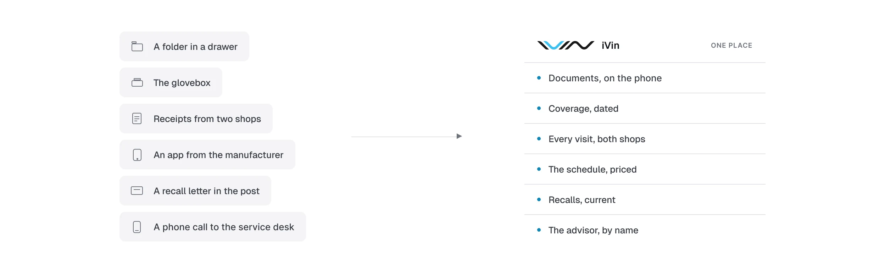
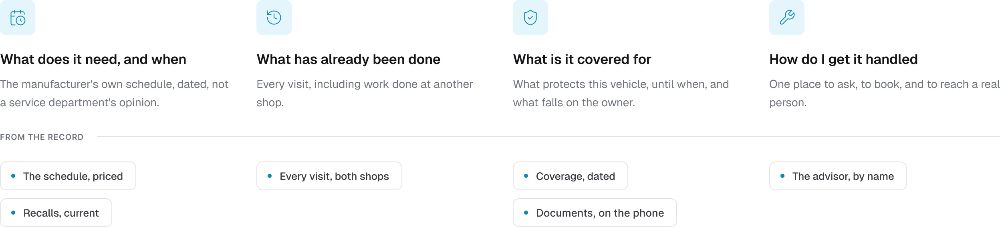
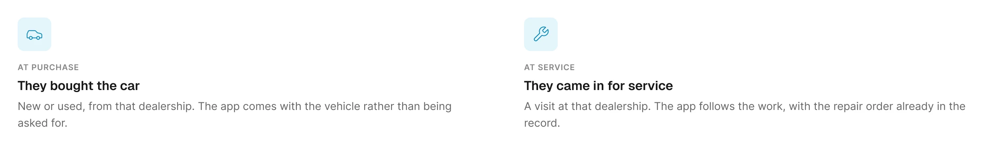
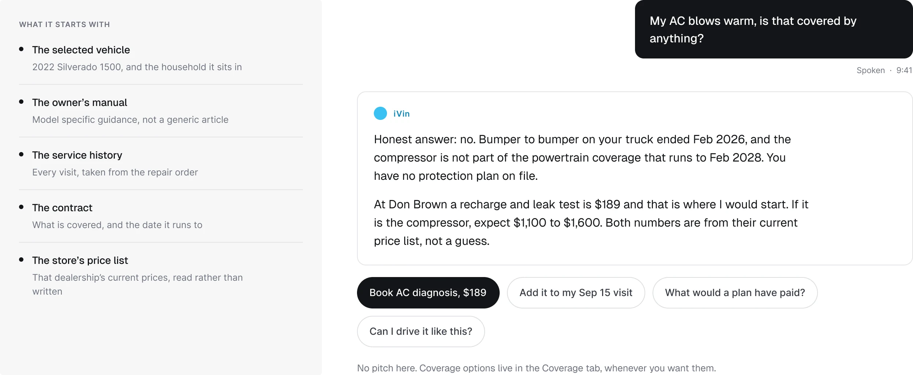
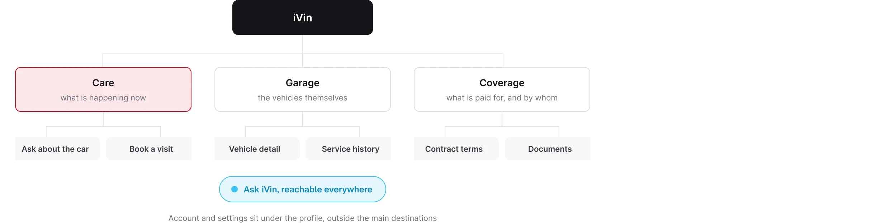
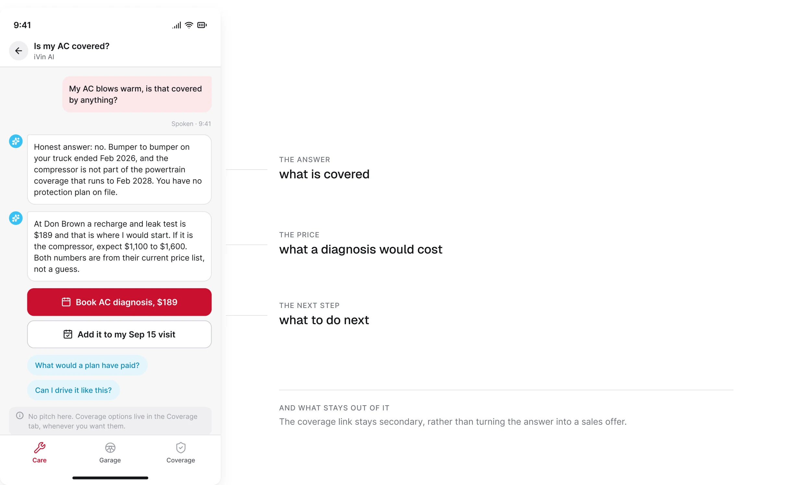
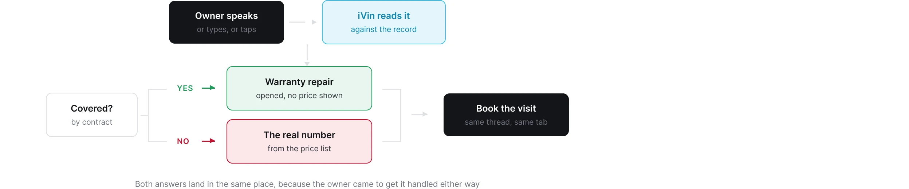
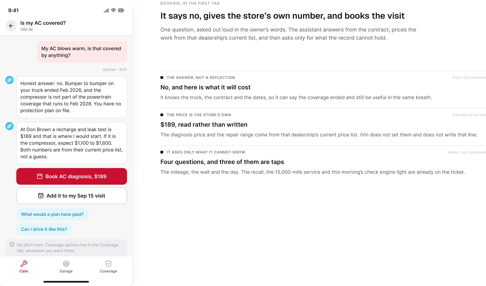
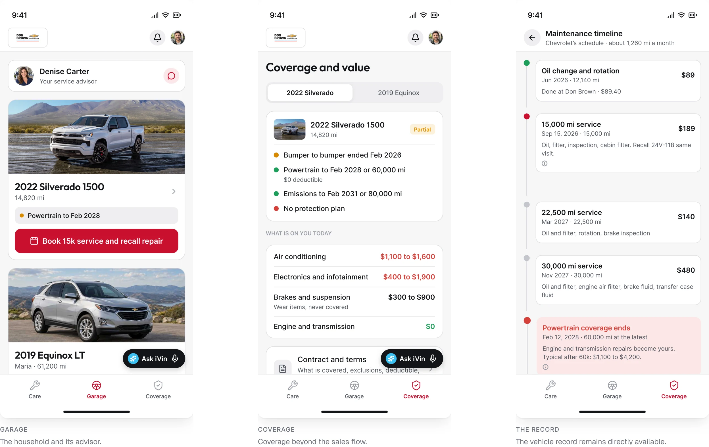
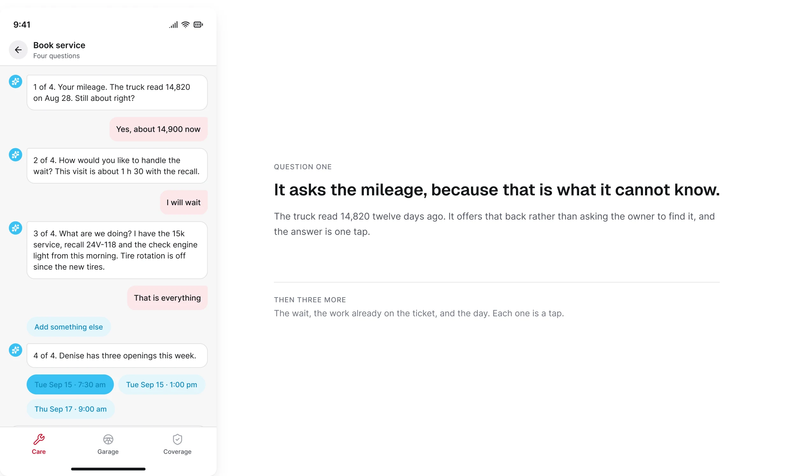

Vinsyt / App móvil de consumo
iVin
Cuidado del vehículo, cobertura y agendamiento, organizados alrededor de las preguntas del propietario
Diseñé la app móvil de Vinsyt para propietarios, reuniendo mantenimiento, historial de servicio, documentos, cobertura y agendamiento en una sola experiencia. Mi trabajo incluyó los flujos de conversación del asistente de IA, la presentación de las respuestas y la transición hacia el agendamiento, junto con la navegación, los componentes y el copy de la app.
Rol
Product design, diseño de interacción, UI, componentes y UX writing.
El historial del propietario
Reunir el historial alrededor de cuatro preguntas
Dónde vive hoy
Un plan de mantenimiento, una factura, un documento de cobertura y una cita responden cada uno a una parte distinta de la misma pregunta: ¿qué tengo que hacer con este auto?

Las cuatro preguntas
Organicé la experiencia alrededor de cuatro preguntas del propietario. El historial aporta el detalle; esas preguntas le dan una estructura útil.

La primera visita
Hacer útil la primera visita antes de pedir la app
La experiencia más amplia incluye una ruta por navegador además de la app del teléfono. Un enlace puede llevar al propietario a su historial sin que instalar algo sea la primera tarea.
La invitación a la app tiene entonces un trabajo específico: explicar qué agrega la experiencia del teléfono.
Dos formas de entrar
El navegador da una entrada al historial; la invitación explica la experiencia del teléfono. Alrededor de 19 de cada 100 propietarios que reciben un historial terminan registrándose en la app.

El asistente de IA
Hacer del asistente, que ya conoce el vehículo, el punto de partida
Desarrollamos un asistente de IA que parte del vehículo seleccionado y de la información que ya existe sobre él. Usa el manual del propietario para orientación específica del modelo, el historial y la información de cobertura del vehículo como contexto, y los datos del concesionario para precios de servicio y ofertas.
Diseñé cómo esa información se convierte en una interacción: cómo el propietario hace una pregunta, cómo se presenta la respuesta y cómo lleva al agendamiento. El propietario describe en qué necesita ayuda, en lugar de tener que aportar primero el contexto que la plataforma ya tiene.
Esa capacidad definió el punto de entrada de la app. En lugar de sumar el asistente como un destino más en un directorio, lo convertí en el punto de partida. El asistente, el asesor de servicio y las notas del propietario viven en una sola vista cronológica, mientras que la cobertura tiene un destino propio.
Qué sabe antes de la pregunta
Una pregunta, hecha en voz alta con las palabras del propietario, respondida desde el contrato y cotizada con la lista del propio concesionario.

La arquitectura de información
Los destinos principales mantienen accesibles el historial del vehículo y la cobertura.

Una entrada guiada por preguntas le da un punto de partida a quien tiene una preocupación clara, pero hace más difícil encontrar una función desconocida cuando la persona no sabe qué preguntar.
La respuesta de cobertura
Mantener separados la respuesta, el precio y el siguiente paso
Mantuve el enlace de cobertura en segundo plano en lugar de convertir la respuesta en una oferta de venta. El propietario puede entender qué está cubierto, cuánto costaría un diagnóstico y qué hacer después como decisiones separadas.
Una respuesta, tres partes
La respuesta explica el contrato y ofrece un siguiente paso sin vender dentro de la respuesta.

El recorrido que le da forma
La información del contrato responde la pregunta de cobertura; el concesionario aporta el precio.

Agendar una visita
Convertir la respuesta en una visita de servicio
El flujo destacado conecta la pregunta del propietario con tres fuentes: el contrato de cobertura, el historial del vehículo y la oferta de servicio vigente del concesionario. El asistente explica qué cubre el contrato, presenta el precio de diagnóstico del concesionario y ofrece un paso para agendar sin convertir la respuesta en un argumento de venta.
La conversación arrastra el vehículo, el servicio relevante y el recall abierto. Pide solo lo que todavía falta confirmar: una lectura de kilometraje actual, un día preferido y si el propietario piensa esperar en el taller.
Preguntado, respondido, cotizado, agendado
El flujo de agendamiento asistido por IA arrastra el vehículo, el servicio y el recall, y luego pide los detalles de la visita que faltan confirmar. 537 de las 649 citas de servicio que generó la plataforma en 2026 se agendaron aquí.

El producto conectado
Mantener el resto del producto directamente accesible
El garaje se organiza alrededor de un hogar, con el asesor por encima de los vehículos. La cobertura pone las exclusiones junto a las inclusiones. El historial guarda qué está pendiente, qué ya se hizo y los documentos que el propietario puede necesitar presentar.
El resto del producto
Estas vistas sostienen la entrada guiada por preguntas y mantienen visibles en la interfaz el historial y las demás tareas del propietario.

El hilo del agendamiento
Un recordatorio también debe llevar de vuelta a algo sobre lo que el propietario pueda actuar. Su redacción y su destino son parte del mismo flujo que la pantalla que abre.

Entrega y alcance
Una experiencia para el propietario, conectada con el resto de la plataforma
El trabajo cubre la estructura, la interfaz, los componentes compartidos y el copy de la app móvil. La experiencia en navegador, los mensajes del ciclo de vida y el design system se cubren en casos de estudio aparte.
- 1,895 registros en los primeros ocho meses de 2026
- 2,057 sesiones con el asistente en el mismo periodo
- iOS y Android, sobre componentes compartidos con la app web del propietario
- El producto está en producción. Las pantallas destacadas de esta página vienen de un prototipo en Figma.